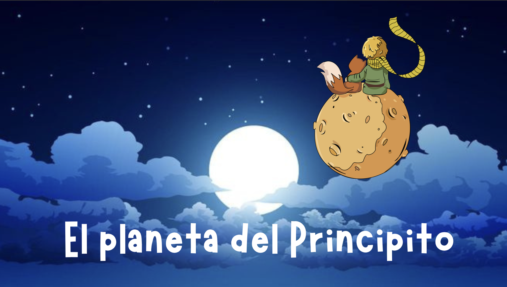

Esta SdA está dirigida al alumnado de 5º curso de Educación Primaria y engloba las áreas de Conocimiento del Medio, Lengua Castellana y Literatura y Matemáticas, teniendo como hilo conductor el Sistema Solar y la obra de El Principito.
A lo largo de la siguiente temporalización, engloba los saberes básicos que se muestran a continuación: